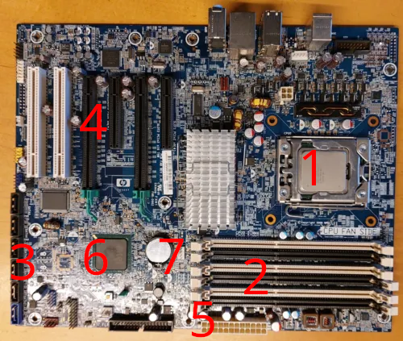

BytesOfProgress
Wiki
Mainboard
The mainboard, or motherboard, is the biggest and most important circuit board inside your computer. It's the home for all the important parts that make your computer work. Here are its main jobs:
1: CPU Socket: This is where the computer's main chip, the CPU, goes. It's the spot where the computer's "brain" does all its thinking and figuring things out.
2: RAM Slots: Think of RAM as the computer's short-term memory. It helps your computer do many things at once. The more RAM capacity, the more things your computer can remember at the same time.
3: SATA Connectors: These are plugs for your computer's long-term memory (HDDs, SSDs, etc.), or physical disk drives.
4: PCie-Slots: These are extra rooms in your computer. You can add special cards, like graphics cards or Storage Connector expansion cards to these slots.
5: 24-Pin ATX Plug: This is where the Power Supply Unit is plugged in.
6: Chipset: The chipset on a motherboard is a component that helps different parts of the computer, like the CPU and peripherals, to communicate effectively. It manages data flow, ensuring everything works together smoothly for your computer to function properly.
7: BIOS battery: BIOS battery or CMOS battery, is a small, coin-shaped battery on the motherboard. It provides power to the CMOS memory, preserving critical system information such as date, time, and BIOS settings when the computer is powered off. If this battery weakens or fails, you may experience issues with system settings and need to replace it to maintain proper functionality.
back